Плод формируется из завязи, после опыления и оплодотворения. Плод – это орган цветкового растения, содержащий в себе семена. Плод принимает участие в распространении семени и защищает его от неблагоприятных условий.
Плод состоит из семян и околоплодника.
Околоплодник – разросшиеся и видоизменившиеся стенки завязи. Также в его образовании могут принимать участие основания тычинок, чашелистиков, лепестков, цветоложе.
Семена образуются из семязачатков.
Классификация основана на строении плодов.
Если у цветка один пестик, то из него формируется простой плод (см. Рис. 1) (горох, пшеница).
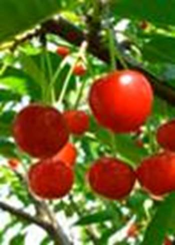
Рис. 1. Простой плод вишни
Из цветка, имеющего несколько пестиков, формируется сложный (см. Рис. 2) или сборный плод (малина, лютик).
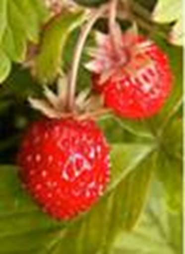
Рис. 2. Сборный плод земляники
Соплодие (см. Рис. 3) – плоды, образующиеся из завязей целого соцветия, которые срастаются и превращаются в единое целое (ананас, инжир).
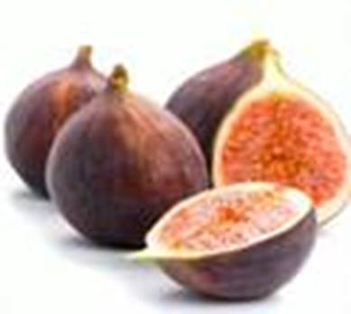
Рис. 3. Соплодие инжира
Плоды по количеству семян:
· Односемянные (грецкий орех, персик, пшеница)
· Многосемянные (соя, капуста, яблоня)
Плоды, в зависимости от консистенции околоплодника:
· Сочные – в состав околоплодника входит сочная мякоть.
· Сухие
Ягодовидные плоды – плоды с сочным околоплодником, чаще всего многосемянные.
Ягода (см. Рис. 4) – сочный плод с мякотью, покрытый тонкой кожицей (смородина, клюква, черника, виноград, барбарис, финик). Околоплодник не образует жесткой и прочной косточки.
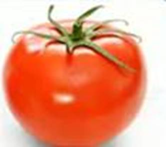
Рис. 4. Ягода томата
Яблоко – сложный плод, в образовании которого принимают участие нижние части тычинок, лепестков, чашелистиков, цветоложа (яблоня, боярышник, рябина).
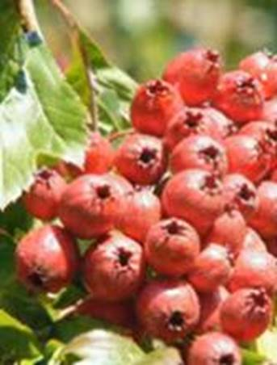
Рис. 5. Плод яблока у боярышника
Гесперидий (померанец) – ягодовидный плод лимона, апельсина (см. Рис. 6).
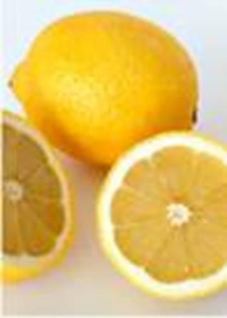
Рис. 6. Плод лимона
Несколько разновидностей плодов, имеющих сочную мякоть и твердую косточку.
Костянка (см. Рис. 7) – сочный плод с тонкой кожицей, мякотью и одревесневевшим внутренним слоем околоплодника – косточкой, внутри которой находится одно семя (вишня, абрикос, черемуха). У бузины и крушины костянки многосемянные.
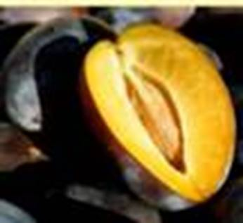
Рис. 7. Костянка сливы
Многокостянка (см. Рис. 8) – сложный плод, у которого на белом сухом коническом цветоложе расположены многочисленные сочные костянки (малина, костяника).
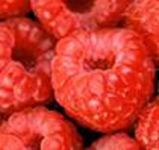
Рис. 8. Многокостянка малины
Это односемянные, нераскрывающиеся плоды с сухим околоплодником.
Орех (см. Рис. 9) – плод с жестким, деревянистым околоплодником (лещина, фундук, грецкий орех).
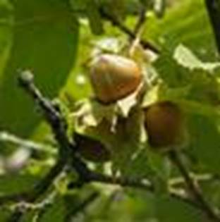
Рис. 9. Орех лещины
Орешек (см. Рис. 10) – плод, сходный с орехом, но меньших размеров (гречиха, щавель, конопля).
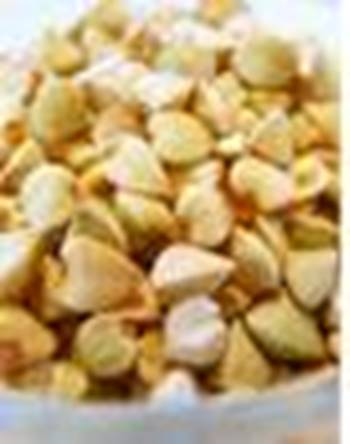
Рис. 10. Орешек гречихи
Многоорешек (см. Рис. 11) – плод, у которого несколько орешков сидят на разросшемся цветоложе (земляника).
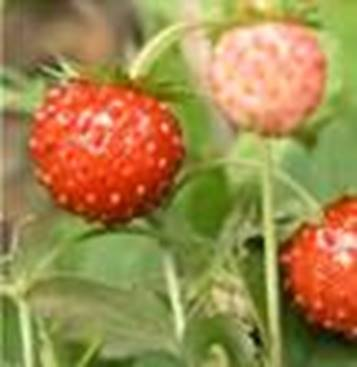
Рис. 11. Многоорешек земляники
Желудь (см. Рис. 12) – плод, окруженный чашевидной плюской у основания (дуб).
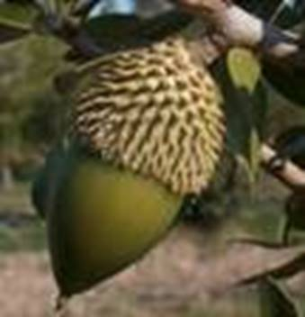
Рис. 12. Желудь
Семянка (см. Рис. 13) – сухой плод, околоплодник которого прилегает к единственному семени, но не срастается с ним (подсолнечник).
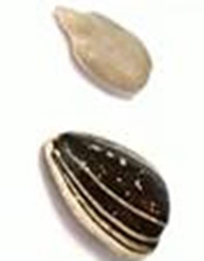
Рис. 13. Семянка
Зерновка (см. Рис. 14) – сухой плод, у которого пленчатый околоплодник срастается с семенной кожурой единственного семени (пшеница, кукуруза).
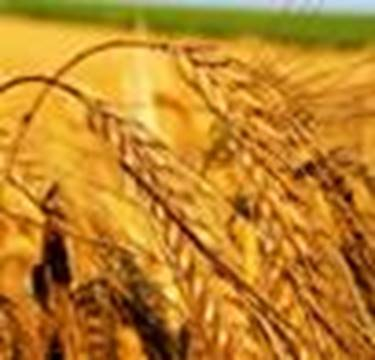
Рис. 14. Зерновка пшеницы
Коробочковидные плоды – многосемянные раскрывающиеся плоды с сухим околоплодником.
Боб (см. Рис. 15) – сухой плод, который вскрывается 2 створками (фасоль, бобы). Семена внутри лежат в 1 ряд. Срединной перегородки нет.
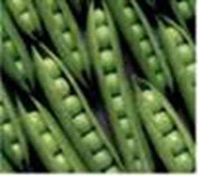
Рис. 15. Боб гороха
Стручок (см. Рис. 16) – плод, вскрывающийся 2 створками. Внутри имеется перегородка (капуста, редька).
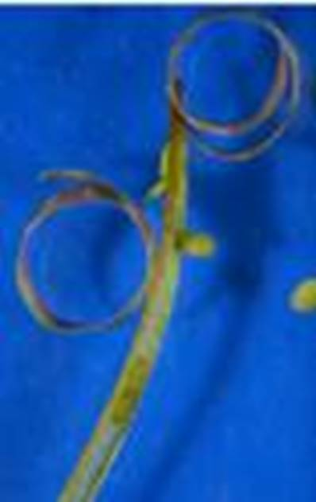
Рис. 16. Стручок
Коробочки (см. Рис. 17) – сухой плод, семена которого высыпаются через специальные отверстия в стенке (лен, мак, хлопчатник, тюльпан).
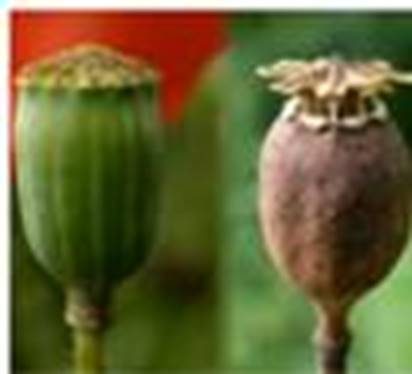
Рис. 17. Коробочка мака
Крылатка – односемянный плод, у которого кожистый околоплодник образует крылообразный вырост (ясень, вяз).
Дуриан (см. Рис. 18)
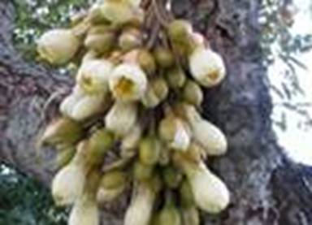
Рис. 18. Дуриан
Распространен в юго-восточной Азии. Плод достигает массы до 4 кг. Покрыт острыми иголками, что защищает его от поедания животными в незрелом виде. Плод имеет дурной запах, но хорош на вкус.
Мальдивский орех (плод сейшельской пальмы) может достигать до 25 кг.
Соплодие хлебного дерева (родственник фикуса) достигает до 50 см в диаметре, а массой – до 40 кг.
Плод тыквы может достигать более 50 кг, иногда до 90. По строению плод тыквина похож на ягоду, но его наружные слои плотные. Многочисленные семена лежат внутри сочной мякоти плода. Плод характерен для тыквы, арбуза, огурцов.
Рассмотрите имеющиеся у вас плоды. Разделите их на сухие и сочные. Их разделите на односемянные и многосемянные. Определите названия всех плодов и образующих их растений. Заполните таблицу.
Список литературы
1. Биология. Бактерии, грибы, растения. 6 кл.: учеб. для общеобразоват. учреждений / В.В. Пасечник. – 14-е изд., стереотип. – М.: Дрофа, 2011. – 304 с.: ил.
2. Тихонова Е.Т., Романова Н.И. Биология, 6. – М.: Русское слово.
3. Исаева Т.А., Романова Н.И. Биология, 6. – М.: Русское слово.
Дополнительные рекомендованные ссылки на ресурсы сети Интернет
1. Trifoly.ru (Источник).
2. Hellper.ru (Источник).
3. Beaplanet.ru (Источник).
Домашнее задание
1. Биология. Бактерии, грибы, растения. 6 кл.: учеб. для общеобразоват. учреждений / В.В. Пасечник. – 14-е изд., стереотип. – М.: Дрофа, 2011. – 304 с.: ил. – с. 147, задания и вопросы 5, 6 (Источник).
2. Что такое плод костянка? Для каких растений он характерен?
3. Что представляют собой ягодовидные плоды? Какие плоды к ним относятся?
4. * Наверняка у каждого из вас есть комнатные покрытосеменные растения. Назовите их плоды, дайте классификацию этим плодам (сухой – сочный, простой – сложный, количество семян).